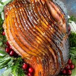
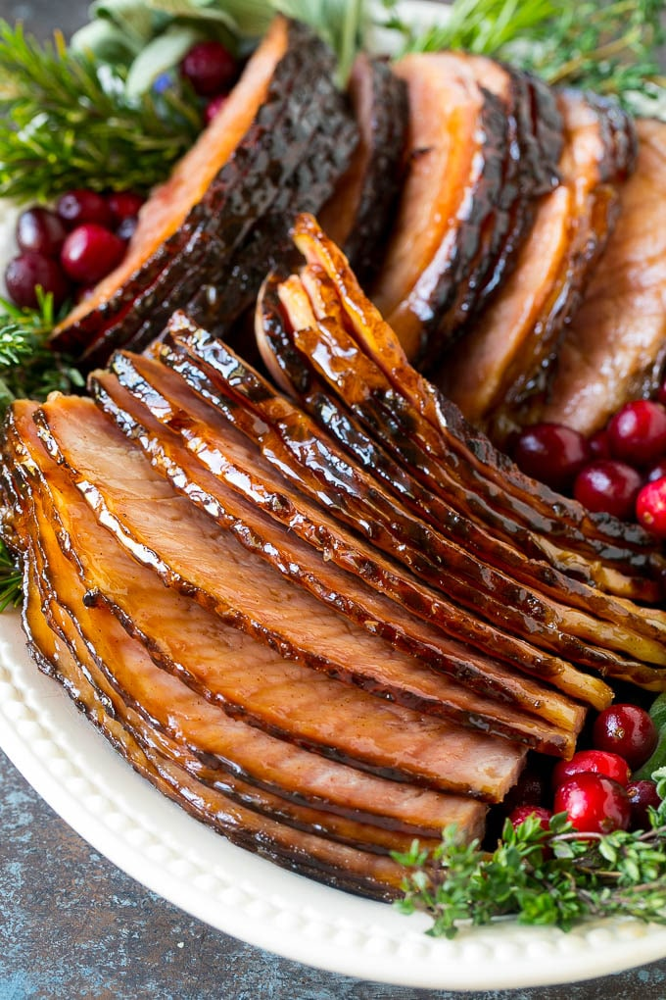

Pineapple Glazed Ham

Ingredients
- 1/2 cup butter
- 1 cup brown sugar
- 1/2 cup pineapple juice
- 1/2 teaspoon cinnamon
- pinch of nutmeg
- pinch of cloves
- 8-10 pound spiral cut ham
Instructions
- Add the butter, brown sugar, pineapple juice, cinnamon, nutmeg and cloves to a pin. Place the pan over medium heat.
- Bring the pan to a simmer and cook for 5-7 minutes or until the glaze is syrupy
- pour half the glaze over your ham. Cover the ham with foil and bake at 350 degrees F for 15 minutes per pound.
- Uncover the ham and pour the remaining glaze over the top. Increase the oven to 400 degrees F. Bake for 15-20 minutes or until ham is caramelized and browned.
Thoughts
Even though I'm not a huge fan of pineapple in general I adored this meal. Not only did it create a wonderful flavor and aroma but the leftovers carried me for over a week! For the actual meal I paired it with a slowcooked macaroni and cheese which made for a very good pairing.
Back Home
